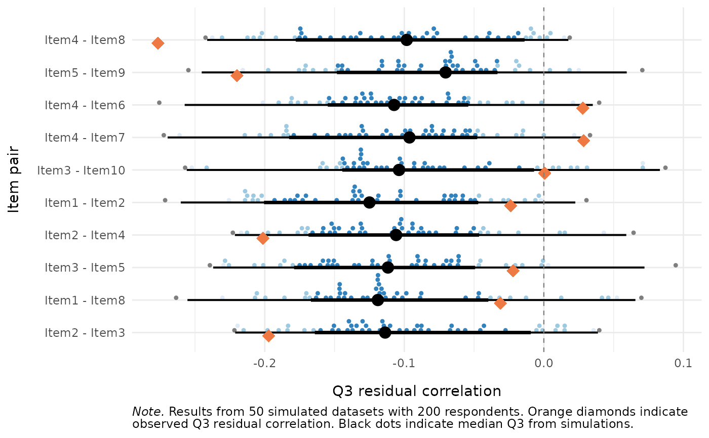

Plot Distribution of Simulated \(Q_3\) Residual Correlations
Source:R/locdep_q3_plot.R
RMlocdepQ3plot.RdVisualises the distribution of simulation-based Yen's \(Q_3\) residual
correlations per item pair from RMlocdepQ3Cutoff,
optionally overlaying observed \(Q_3\) values computed from real data via
mirt::residuals(..., type = "Q3").
Arguments
- simfit
The return value of
RMlocdepQ3Cutoff(a list with componentspair_results,pair_cutoffs,actual_iterations,sample_n, anditem_names).- data
Optional. A data.frame or matrix of item responses for computing and overlaying observed \(Q_3\) values. Items must be scored starting at 0 (non-negative integers). When provided, the plot includes orange diamond markers for the observed \(Q_3\) alongside the simulated distribution, plus segment summaries from the cutoff intervals.
- items
Optional character vector of item names to include in the plot. Only item pairs where both items are in this vector will be shown. When
NULL(default), all item pairs are plotted.- n_pairs
Optional positive integer. When supplied, only the
n_pairsitem pairs with the largest deviation from the simulated null are plotted, sorted by|observed Q3 - median(simulated Q3 per pair)|descending whendatais supplied, or by|median(simulated Q3 per pair)|otherwise. Applied after theitemsfilter when both are supplied. Values larger than the number of available pairs are silently capped.
Value
A named list of two ggplot objects (mirroring the $matrix /
$pairs structure of RMlocdepQ3's table output):
$pairsthe per-pair plot described below (always returned).
$matrixa lower-triangle tile heatmap of the observed \(Q_3\) matrix, with pairs above the global dynamic cut-off outlined. This needs the observed data, so it is
NULL(with a message) whendatais not supplied. Whenitemsis given, the heatmap is subset to those items;n_pairsdoes not apply to it.
Details
Uses ggdist::stat_dotsinterval() (when data is not supplied) or
ggdist::stat_dots() (when data is supplied) with
point_interval = "median_hdci" and .width = c(0.66, 0.95, 0.99).
The $pairs plot shows one row per item pair (labelled as "Item1 - Item2").
Only
the upper triangle of the \(Q_3\) matrix is plotted (pairs are unordered
under symmetric \(Q_3\), unlike partial gamma which is direction-dependent).
When data is not supplied, the function plots the simulated Q3
distributions as dot-interval plots using ggdist::stat_dotsinterval()
with median and Highest Density Continuous Interval (HDCI) summaries.
When data is supplied, the function:
Computes observed \(Q_3\) residual correlations under the same estimator used to build
simfit(its$estimator: CML/WLE by default, or MML viamirt).Overlays observed \(Q_3\) values as orange diamond markers on the simulated distributions.
Shows per-pair cutoff intervals (from
simfit$pair_cutoffs) as black line segments, with thicker segments for the 66\ interval and black dots for the median.
The ggplot2, ggdist, mirt, and scales packages must be
installed (most are in Suggests, not Imports).
Examples
# \donttest{
if (requireNamespace("ggplot2", quietly = TRUE) &&
requireNamespace("ggdist", quietly = TRUE)) {
set.seed(42)
sim_data <- as.data.frame(
matrix(sample(0:1, 200 * 10, replace = TRUE), nrow = 200, ncol = 10)
)
colnames(sim_data) <- paste0("Item", 1:10)
# Run simulation (use more iterations, e.g. 500+, in real analyses)
cutoff_res <- RMlocdepQ3Cutoff(sim_data, iterations = 50,
parallel = FALSE, seed = 42)
# Simulated distribution only
RMlocdepQ3Plot(cutoff_res)
# With observed Q3 overlaid
RMlocdepQ3Plot(cutoff_res, data = sim_data)
# Top 10 pairs by departure from null
RMlocdepQ3Plot(cutoff_res, data = sim_data, n_pairs = 10)
}
#> The Q3 tile heatmap ($matrix) requires `data`; returning $matrix = NULL.
#> $matrix
 #>
#> $pairs
#>
#> $pairs

#>
# }